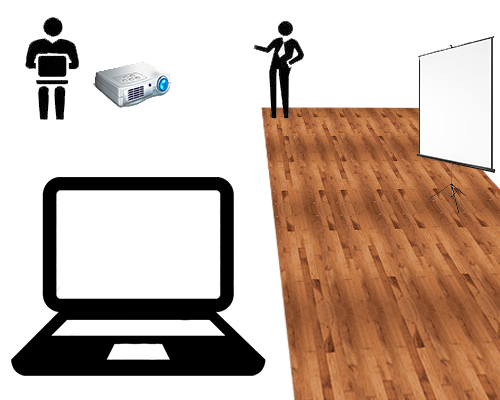

Faire communiquer 2 navigateurs
Présentation sur les Websockets
avec un peu de Spring Boot dedans
Basile Parent
Développeur Web
Scrum Master
Scrum Master
 @basileparent
@basileparent
Pourquoi faire ?

Pourquoi faire ?

Le projet

Prérequis
- 2 interfaces distinctes : régie - spectateur
- Les 2 interfaces communiquent en temps réel
- Facilement paramétrable (back-office)
- Avoir un enchaînement précis d’écrans :
intro, vidéo de présentation, liste des catégories, catégorie, remerciements, prochaines dates
Prérequis
- Sessions conservées
- Facilement déployable sur n’importe quel PC portable Windows
- Quelques idées d’évolutions :
- Faire tourner sur un Raspberry
- Le présentateur dirige tout depuis une tablette
Les technologies
La communication en temps réel
Ajax Polling

La communication en temps réel
Les WebSockets

La communication en temps réel
Les WebSockets

Firefox 11 + (2012) IE 10+ (2012) 
Safari 7 + (2013) 

Android 4.4 + (2013) Blackberry 7 + (2012)
La communication en temps réel
Les WebSockets
| Avantages | Inconvénients |
|---|---|
| Cross plateforme (Web, desktop, mobile) | Pas de fonction de retour comme en Ajax |
| Pas d'entête HTTP | A besoin d'un serveur pour fonctionner |
| Plus rapide que l'AJAX | Besoin de réfléchir à sa "stratégie" de communication |
| Le serveur connait ses clients actifs | |
| Compatible avec tous les navigateurs récents | Compatible avec tous les navigateurs récents |
API WebSocket
| Méthodes | Événements | Attributs |
|---|---|---|
| void send() | onOpen | readyState |
| void close() | onMessage | url |
| onError | protocole | |
| onClose | ... |
let socket = null;
try {
socket = new WebSocket("ws://localhost", "protocoleOne");
} catch (exception) {
console.error(exception);
}
socket.onopen = (event) => { socket.send("Hello world!"); };
socket.onmessage = (event) => { console.log("Message:", event.data); };
socket.onerror = (error) => { console.error(error); };
socket.onclose = (event) => { console.log("Connexion terminé."); };
API WebSocket
Client JS (émetteur)
const message = JSON.stringify({
type: "message",
value: "Hello World!"
});
websocket.send(message);
Client JS (récepteur)
socket.onmessage = (event) => {
const data = JSON.parse(event.data);
switch (data.type) {
case "message" :
// Do something
case "nextStep" :
// Do something
[...]
}
};
Serveur PHP
protected function process($user, $json_message) {
try {
$json_obj = json_decode_utf8($json_message);
switch ($json_obj->type) {
case "message" :
// Do something
case "nextStep" :
// Do something
}
}
}
Socket IO
Résoud les problèmes de compatibilité navigateur via différentes méthodes :
- WebSocket
- Adobe Flash Socket
- AJAX long polling
- AJAX multipart streaming
- Forever Iframe
- JSONP Polling
Socket IO
Navigateurs compatibles
- Internet Explorer 5.5+ (1999)
- Safari 3+ (2007)
- Firefox 3+ (2008)
- Google Chrome 4+ (2010)
- Opera 10.61+ (2010)
- Safari sur iPhone et iPad
- Le navigateur Android
Socket IO
Le serveur PHP
use Workerman\Worker;
use PHPSocketIO\SocketIO;
$io = new SocketIO(2021);
$io->on('connection', function($socket) {
$socket->on('message', function ($data)use($socket){
$socket->emit('message_received', $data);
$socket->broadcast->emit('message', $data);
});
$socket->on('nextStep', function ($data)use($socket){
// Do something
});
});
Worker::runAll();
php server.php startExemple de code pour mon projet
Émetteur (régie)
const socket = io.connect('http://localhost:2021');
const selectPicture = (idPicture) =>
socket.emit('selectPicture', { id : idPicture } ));
Récepteur (spectateur)
const socket = io.connect('http://localhost:2021');
socket.on('selectPicture', jsonData => {
document.getElementById(`picture_${ jsonData.id }`)
.classList.add("selected");
});
Serveur PHP
use Workerman\Worker;
use PHPSocketIO\SocketIO;
$io = new SocketIO(2021);
$io->on('connection', function($socket) {
$socket->on('selectPicture',
function ($data)use($socket) {
// Database update
$socket->broadcast
->emit('selectPicture', $data);
});
});
Worker::runAll();
La synchronisation
Comment garder toutes les interfaces synchronisées
La synchronisation
Comment garder toutes les interfaces synchronisées

La synchronisation
En cas de problème serveur
Solution 1

Solution 2

La synchronisation
Solution hybride

Le résultat
Le résultat


Une autre solution
La bonne vieille popup
Une autre solution
La bonne vieille popup
Stratégie ?
Régie → Spectateur
Spectateur → Régie
Plus stable (graphiquement)
Une autre solution
La bonne vieille popup
| Avantages | Inconvénients |
|---|---|
| Cross-origin | Peut être bloqué par le navigateur |
| Supporté par la plupart des navigateurs | Manque de stabilité |
| Pas besoin de serveur | Forcément sur le même ordinateur |
| Sérialisation des objets |


Spring Boot
- Serveur Tomcat intégré
- Base de données H2 en mode file
- Dépendance Spring pour les WebSockets
- Uniquement la JRE 8 à installer
Spring Boot
Configuration WS
org.springframework.boot
spring-boot-starter-websocket
@Configuration
@EnableWebSocketMessageBroker
public class WebSocketConfig implements WebSocketMessageBrokerConfigurer {
@Override
public void registerStompEndpoints(StompEndpointRegistry registry) {
registry.addEndpoint("/my-websocket-app").withSockJS();
}
@Override
public void configureMessageBroker(MessageBrokerRegistry config) {
config.setApplicationDestinationPrefixes("/app");
config.enableSimpleBroker("/topic");
}
}
Javascript
Stomp + Sock JS
const socket = new SockJS('http://localhost/my-websocket-app');
const stompClient = Stomp.over(socket);
stompClient.connect({}, frame => {
console.log('Connected: ' + frame);
stompClient.send("/app/selectPicture/1", {}, "");
stompClient.send("/app/selectCategory", {}, JSON.stringify({'name' : 'toto'}));
});
Spring Boot
Controller WebSocket
@MessageMapping("/selectPicture/{pictureId}")
@SendTo("/topic/selectPicture")
public PictureDto selectPicture(@DestinationVariable Integer pictureId) {
// Database update
return new PictureDto(pictureId);
}
@MessageMapping("/selectCategory")
@SendTo("/topic/selectCategory")
public CategoryDto selectPicture(CategoryDto categoryDto) {
// Database update
return categoryDto;
}
Javascript
Callbacks
stompClient.subscribe('/topic/selectPicture', jsonData => {
const pictureId = JSON.parse(jsonData.body).id;
document.getElementById('picture_${ pictureId }")
.classList.add("selected");
});
stompClient.subscribe('/topic/selectCategory', categoryDto => {
const categoryName = JSON.parse(jsonData.body).name;
loadCategory(categoryName);
});
Autres méthodes
@SendToUser (via Spring Security)
@MessageMapping("/message")
@SendToUser("/queue/reply")
public ChatMessage processMessageFromClient(
ChatMessage message,
Principal principal) throws Exception {
return message;
}
stompClient.send("/app/user/[myUserId]/message", {}, "message");
Autres méthodes
@MessageExceptionHandler
@MessageExceptionHandler
@SendTo("/topic/errors")
public String handleException(Throwable exception) {
return exception.getMessage();
}
ws.subscribe("/topic/errors", message => {
alert("Message " + message.body);
});
Autres méthodes
SimpMessagingTemplate
@Autowired
private SimpMessagingTemplate msgTemplate;
@MessageMapping("/chats")
public void handleChat(@Payload ChatMessage message) {
this.msgTemplate.convertAndSend("/queue/chats-" + myCustomIdentifier,
message.getMessage());
}
@Schedule(cron="0 0 * * * *")
public void spam() {
this.msgTemplate.convertAndSend("/queue/all-chats", "Abonnez-vous !!!");
}
Merci
- H. Sablonnière : Le Web multi-écrans en action
Communication sur une seule machine sans serveur (Popup, LocalStorage events, Broadcast Channel) - Spring Initializr
- Devoxx : De zéro à héros avec Spring Boot
Attention : concerne Spring Boot 1 - TechM6Web : Benchmarking WebSockets
Benchmark, tests de montée en charge, ...